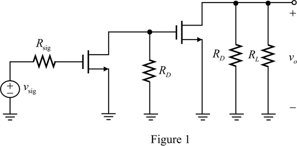
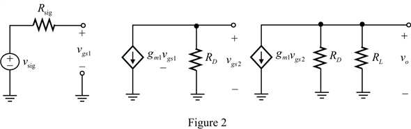

Step 1:
Draw the circuit for cascaded connection of two identical CS amplifiers.

Step 2:
(a)
Draw the equivalent circuit for cascaded connection of two identical CS amplifiers.

Thus, the equivalent circuit for cascaded connection of two identical CS amplifiers is shown in Figure 2.
Step 3:
(b)
Consider the expression for the resistance,  .
.

The value of  is very large, which state that the value of the resistance,
is very large, which state that the value of the resistance,  is infinity. So, it acts as open circuit. The effect of
is infinity. So, it acts as open circuit. The effect of  is negligible in the circuit.
is negligible in the circuit.
Calculate the value of the trans-conductance,  .
.

Substitute for  and for
and for  .
.
The trans-conductance for both amplifiers are same because they are identical.
Step 4:
Calculate the expression for the gain of first source amplifier.
Calculate the expression for the gain of second source amplifier.
Step 5:
Calculate the overall gain of the cascaded amplifier,  .
.
Substitute  for
for  ,
,  for
for  and
and  for
for  .
.
Thus, the overall gain of the cascaded amplifier is .